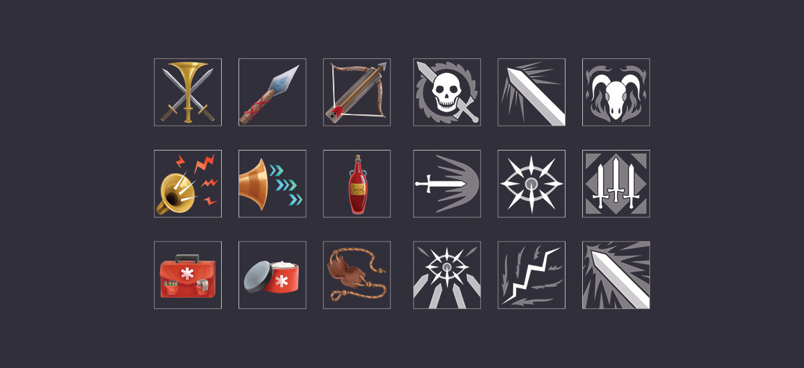

PROJECT
UNYIELDING
DESCRIPTION
Unyielding is a visual novel and RPG game about a mercenary named Catelly who is robbed of her identity. She must go through perilous adventures to seek revenge and discover who she is. There are many game mechanics such as character customization, upgrades, libraries, and a combat-mode. The challenge was to create an interface for a story-heavy game with large amounts of narrative (over 200k words), while highlighting the artwork. Alongside designing the interface and creating the assets, I created several digital artworks that are used as backgrounds.
The game is developed and written by MercernaryMage and the character art is by 5ish.
SKILLS
UI art + design
Iconography
Logomark
Marketing materials
General artist
SANDY SHORE
Map Art
CARD MINI GAME
UI Design + UI Art + Card Design + Background Art
ICONOGRAPHY

ROOT MINI GAME
UI Design + UI Art + Map Art
STEAM PAGE
Marketing Graphics
CONTACT ME
LET'S MAKE MAGIC
studiotwiggly@gmail.com
Denver, Colorado, USA